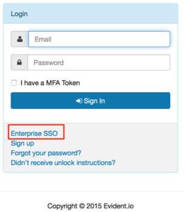

Contact Evident.io Sales and request they add your app to their services.
Contact support@evident.io and request that they enable SAML for your app.
Provide the following:
The date and time you would like Evident.io to switch to SSO.
The following IDP Metadata:
Evident.io will process your request and send you a confirmation email letting you know it is available for testing. They will also provide you with a value for the Default Relay State.
In Okta, select the Sign On tab for the Evident.io app, and enter the Default Relay State you received from Evident.io, as shown below:

Click Save.
Done!
Notes:
IdP-initiated flows and SP-initiated flows are supported.
Just In Time (JIT) provisioning is not supported.
For SP-initiated Flows:
Click Enterprise SSO, then enter your login credentials.
